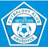

Posledný zápasA-mužstvo

TJ Slovan KrušovcedomáciVýsledok 4:0
 TJ Slovan Bojnáhostia
TJ Slovan BojnáhostiaPrehrapolčas 3:0
Návrh webu · nie je to oficiálna stránka klubu
VI. liga Severovýchod, 16. miesto zo 16
Posledný zápasA-mužstvo

TJ Slovan KrušovcedomáciVýsledok 4:0
TJ Slovan BojnáhostiaPrehrapolčas 3:0
1–1–13výhry, remízy a prehry vo všetkých súťažiach, skóre 16:55
VI. liga Severovýchod
| # | Tím | Z | V | R | P | Skóre | B |
|---|---|---|---|---|---|---|---|
| 1 | 15 | 12 | 3 | 0 | 39:13 | 39 | |
| 2 | 15 | 10 | 2 | 3 | 30:12 | 32 | |
| 3 | 15 | 7 | 4 | 4 | 46:19 | 25 | |
| 4 | 15 | 7 | 4 | 4 | 30:18 | 25 | |
| 5 | 15 | 7 | 3 | 5 | 32:24 | 24 | |
| 6 | 15 | 7 | 3 | 5 | 44:22 | 24 | |
| 7 | 15 | 7 | 2 | 6 | 17:18 | 23 | |
| 8 | 15 | 7 | 0 | 8 | 19:26 | 21 | |
| 9 | 15 | 6 | 2 | 7 | 32:30 | 20 | |
| 10 | 15 | 6 | 2 | 7 | 26:33 | 20 | |
| 11 | 15 | 5 | 3 | 7 | 22:38 | 18 | |
| 12 | TJ Slovan Krušovce | 15 | 5 | 3 | 7 | 33:40 | 18 |
| 13 | 15 | 4 | 4 | 7 | 25:34 | 16 | |
| 14 | 15 | 4 | 3 | 8 | 25:41 | 15 | |
| 15 | 15 | 4 | 3 | 8 | 19:32 | 15 | |
| 16 | 15 | 1 | 1 | 13 | 16:55 | 4 |
Hráči, ktorí v kalendárnom roku 2026 nastúpili alebo boli v nominácii na zápas (podľa Sportnetu).